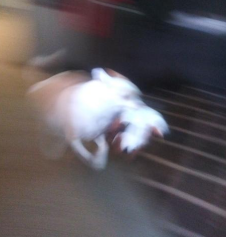

The History
Honestly, I don't know that much about Rocky before we got him, but I like to think that he was a criminal or something. That seems probable, I'm gonna be honest with you. I mean, he steals stuff from me all the time. We got him from an animal shelter downtown, I can't?? find it anymore??? So I guess we got a cursed dog, because that's definitely some horror movie stuff, it's like the place never even existed. We got him on Mother's Day of 2016; we'd been looking for a dog for a while. He was seperated from all the other dogs because he wasn't neutered, so he looked like he was in dog jail, it was kinda funny. It was cute, he stood on his hind legs to look at us and everything. We decided to take him home then and there, so we signed all the papers and came to get him a few days later after he got neutered. Lil dude was in a cone for a few days after we took him home, but he was happy.
